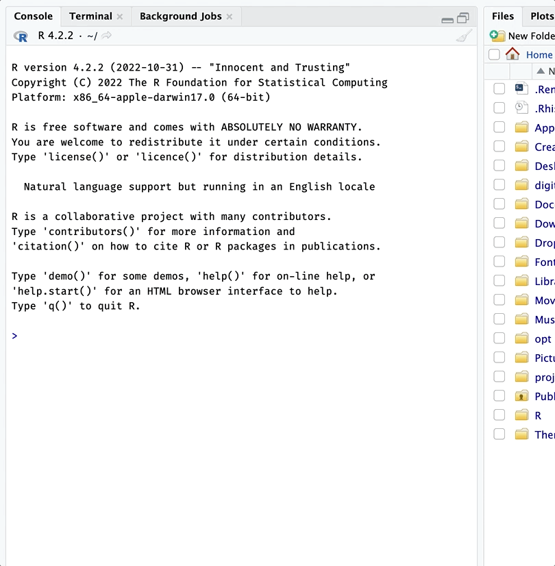
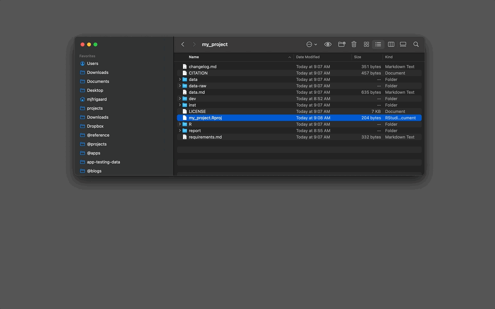

create
create.RmdCreating a gerp projects
Use ger_create() to create a new gerp
project.
- First you need to install the package from GitHub.
install.packages("pak")
pak::pak("mjfrigaard/gerp")- Pass the path to your new project folder to
ger_create(). The folder must not exist yet. If you need help locating a home for your R projects, check out the Folder paths vignette.
gerp::ger_create("~/projects/my-project")- After running
gerp::ger_create(), the new ‘good enough’ R project will open in a new RStudio or Positron session (setopen = FALSEto stay in your current session):

New gerp project!
.Rproj files
gerp projects use RStudio’s project files (with
extension .Rproj). .Rproj files “contain
project options and can also be used as a shortcut for opening the
project directly from the filesystem.”.(2)
In Positron, use File > Open Folder to re-open a
project. When I want to re-open my RStudio project, I navigate to the
.Rproj file and double-click on it to open RStudio:

Opening an RStudio project
Positron doesn’t need the
.Rprojfile (open the project folder instead), but it’s harmless to keep it.If you’re already using a cloud platform like Dropbox or Google Drive to keep track of your files, choose a different location for your R project folders. Cloud storage services are great, but they’ve been known to cause issues when working with R and RStudio.